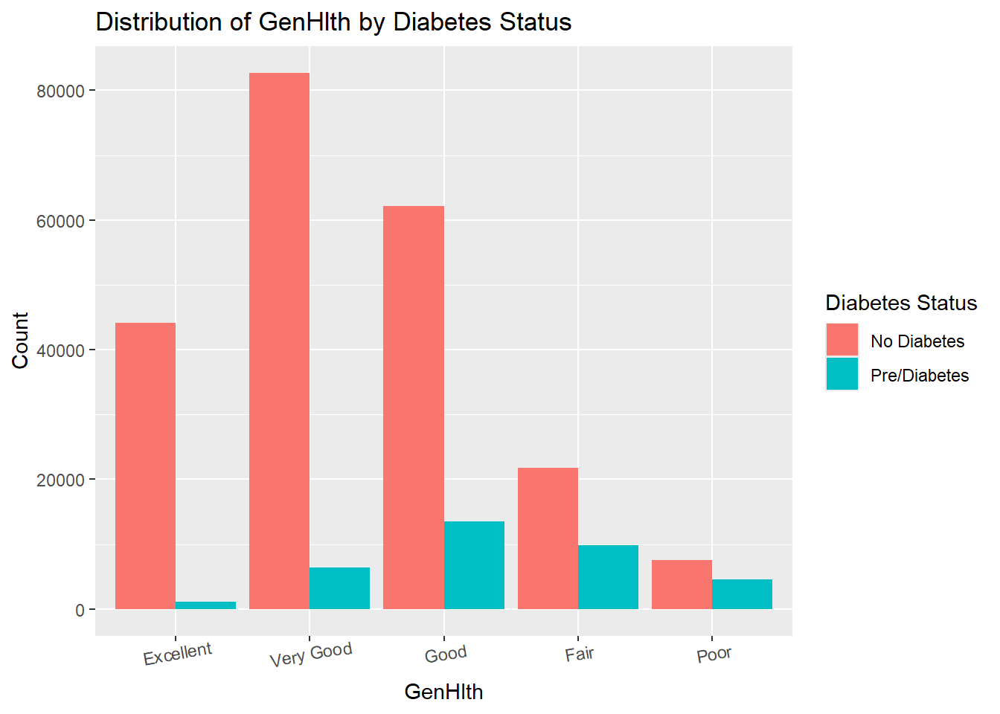

This exploratory data analysis investigates the [CDC Diabetes Dataset] (https://www.kaggle.com/datasets/alexteboul/diabetes-health-indicators-dataset/) to understand factors associated with diabetes prevalence. We want to find which biological and lifestyle factors can influence diabetes. Primarily the variables we were interested in were: -If the participant has High Blood Pressure (Yes/No) -If the participant has High Cholesterol (Yes/No) -If the participant does physical activity (Yes/No) -The participant’s BMI (Integer) -The participant’s Age (Integer) -The participant’s Gender (M/F) -The participants perception of their overall health
These factors are analyzed to explore their relationships with the binary outcome variable, Diabetes_binary, which indicates the presence or absence of diabetes. By examining these variables, this analysis aims to uncover patterns and insights that may inform predictive modeling for diabetes risk.
#Loading Librarieslibrary(tidyverse)
── Attaching core tidyverse packages ──────────────────────── tidyverse 2.0.0 ──
✔ dplyr 1.1.4 ✔ readr 2.1.5
✔ forcats 1.0.0 ✔ stringr 1.5.1
✔ ggplot2 3.5.1 ✔ tibble 3.2.1
✔ lubridate 1.9.3 ✔ tidyr 1.3.1
✔ purrr 1.0.2
── Conflicts ────────────────────────────────────────── tidyverse_conflicts() ──
✖ dplyr::filter() masks stats::filter()
✖ dplyr::lag() masks stats::lag()
ℹ Use the conflicted package (<http://conflicted.r-lib.org/>) to force all conflicts to become errors
Rows: 253680 Columns: 22
── Column specification ────────────────────────────────────────────────────────
Delimiter: ","
dbl (22): Diabetes_binary, HighBP, HighChol, CholCheck, BMI, Smoker, Stroke,...
ℹ Use `spec()` to retrieve the full column specification for this data.
ℹ Specify the column types or set `show_col_types = FALSE` to quiet this message.
#Changing to factors and adding names. beetus_data <- beetus_data |>mutate(Diabetes_binary =factor(Diabetes_binary, labels =c("No Diabetes", "Pre/Diabetes")),HighBP =factor(HighBP, labels =c("No High BP", "High BP")),HighChol =factor(HighChol, labels =c("No High Cholesterol", "High Cholesterol")),Smoker =factor(Smoker, labels =c("Non-Smoker", "Smoker")),PhysActivity =factor(PhysActivity, labels =c("No Physical Activity", "Physical Activity")),Sex =factor(Sex, labels =c("Female", "Male")),GenHlth =factor(GenHlth, levels=1:5, labels =c("Excellent", "Very Good", "Good", "Fair", "Poor")),Education =factor(Education,levels=1:6, labels =c("Never Attended School or only kindergarten","Grades 1-8","Grades 9-11","Grade 12/GED","Some College/Technical School","College Graduate" )),Income =factor(Income,levels=1:8, labels =c("Less than $10,000","$10,000 to $15,000","$15,000 to $20,000","$20,000 to $25,000","$25,000 to $35,000","$35,000 to $50,000","$50,000 to $75,000","$75,000 or more" )),Age =factor(Age,levels=1:13, labels =c("18-24", "25-29", "30-34", "35-39", "40-44","45-49", "50-54", "55-59", "60-64", "65-69","70-74", "75-79", "80 or older" )) )#Variables we're interested inbeetus_filtered <- beetus_data |>select(Diabetes_binary,HighBP,HighChol,PhysActivity,BMI,Age,Sex,GenHlth)
Let’s take a look at the structure of our data and check if there’s any missing values.
From the contingency table for HighBP, we observe a higher proportion of individuals with diabetes who have high blood pressure compared to those without diabetes. This reinforces the connection between hypertension and diabetes.
Let’s make some graphs now.
#Showing plots of variables with 2 factor levelstwofact_plot<- beetus_filtered |>#Select variables with only 2 factor levels for clean plottingselect(Diabetes_binary, where(~is.factor(.) &&nlevels(.) ==2)) |>pivot_longer(cols =-Diabetes_binary, names_to ="Variable", values_to ="Value" )#some scaling issuesggplot(twofact_plot, aes(x = Value, fill = Diabetes_binary)) +geom_bar(position ="dodge") +facet_wrap(~ Variable, scales ="free_x") +#tilted for readabilitytheme(axis.text.x =element_text(angle =10))
#Plots for more than 2 factor levelsmultifact_data <- beetus_filtered |>select(Diabetes_binary, where(~is.factor(.) &&nlevels(.) >2)) |>pivot_longer(cols =-Diabetes_binary, names_to ="Variable", values_to ="Value" )# Create individual plots for each variableplots <-list() # Empty list to store plots# Get unique variable namesunique_variables <-unique(multifact_data$Variable) for (var in unique_variables) { plot <- multifact_data |>filter(Variable == var) |>ggplot(aes(x = Value, fill = Diabetes_binary)) +geom_bar(position ="dodge") +labs(title =paste("Distribution of", var, "by Diabetes Status"),x = var,y ="Count",fill ="Diabetes Status" ) +theme(axis.text.x =element_text(angle =10))# Store the plot in the list plots[[var]] <- plot}plots[[unique_variables[1]]]
plots[[unique_variables[2]]]

General health seems to have a visual difference as well.
Conclusion
This analysis highlights that BMI, HighBP, and self-reported health ratings (GenHlth) appear to have differences. These variables could serve as valuable inputs for predictive modeling. Our modeling section will further explore these variables to see if they are significant.